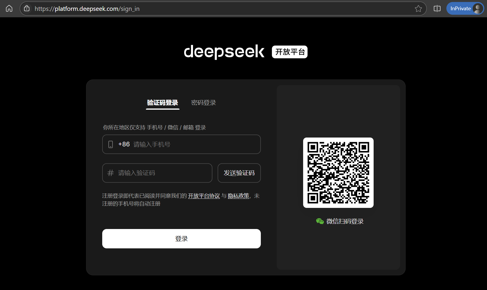
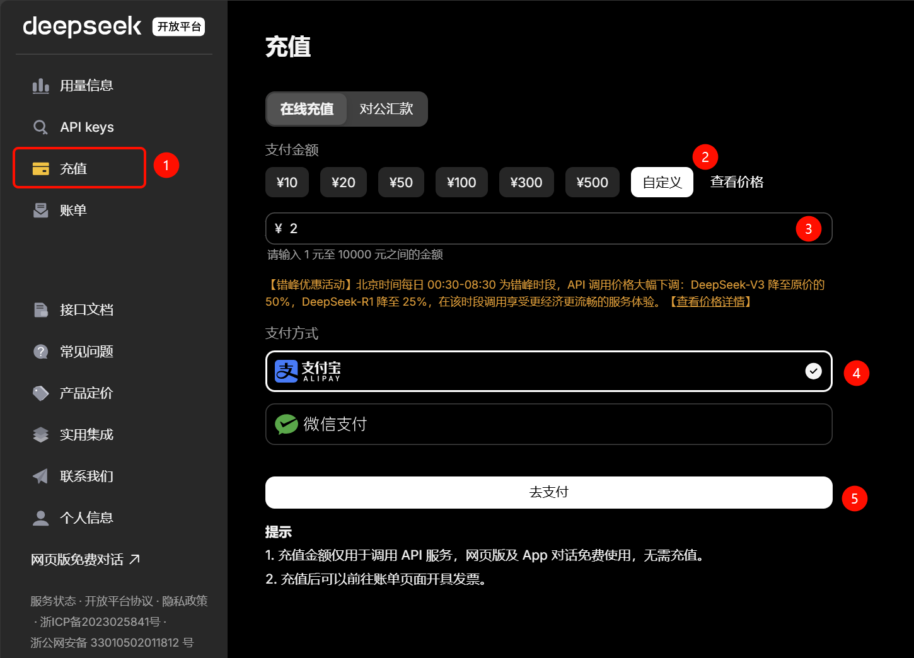
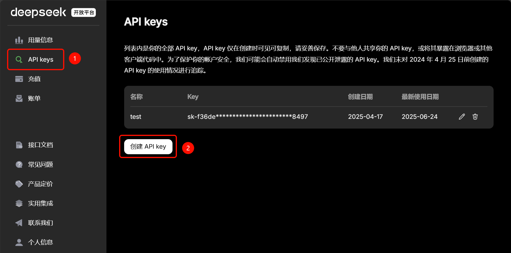
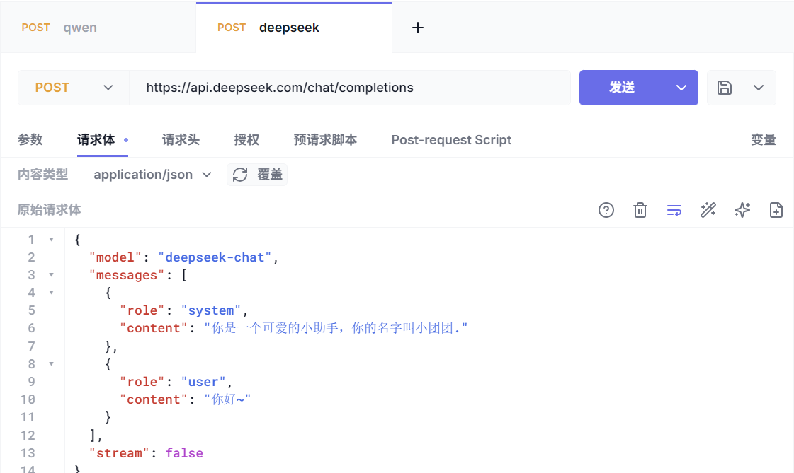
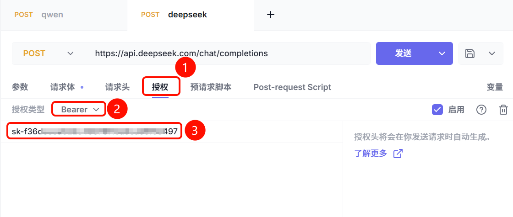

DeepSeek模型服务
官方平台地址：
https://platform.deepseek.com/
注册
首次访问，必须注册：

充值
DeepSeek官方对外提供的大模型API服务是需要收费的，因此我们必须注册账号，充值少量金额（1元也行）。
注册成功后即可进入平台管理页面，点击充值选项，进入充值页面：

选择合适的价格充值后，即可使用DeepSeek的官方API服务。
创建API_KEY
由于是收费服务，为了防止别人盗用你的账号，DeepSeek的所有API都有权限校验功能。我们需要创建一个鉴权用的API_KEY可以。
点击API Keys选项卡，进入对应页面。第一次进入应该没有API key，可以点击创建API key:

注意：API key只有在创建时可以查看，以后都无法查看了。所以需要在创建时妥善保管自己的API key
OK，准备工作完成。
API文档
访问公共大模型都是通过API的形式，不同模型的API标准略有差异，但基本都兼容OpenAI规范。
接下来，我们一起学习DeepSeek的官方API文档。地址如下：
https://api-docs.deepseek.com/zh-cn/
可以看到，在文档中有这样一段调用对话的API示例：
curl https://api.deepseek.com/chat/completions \
-H "Content-Type: application/json" \
-H "Authorization: Bearer <DeepSeek API Key>" \
-d '{
"model": "deepseek-chat",
"messages": [
{"role": "system", "content": "You are a helpful assistant."},
{"role": "user", "content": "Hello!"}
],
"stream": false
}'
这段信息就描述了调用DeepSeek大模型的API要求：
-
请求URL：https://api.deepseek.com/chat/completions
-
请求头：
-
Content-Type: application/json，请求参数的格式，必须是application/json
-
Authorization: Bearer \<DeepSeek API Key>，上一节创建的API_KEY
-
-
请求体：json格式，稍后解释
{
"model": "deepseek-chat",
"messages": [
{"role": "system", "content": "You are a helpful assistant."},
{"role": "user", "content": "Hello!"}
],
"stream": false
}
- 请求方式：虽然没说，但是由于带请求体，所以这里用POST方式
测试
我们可以使用任意的Http客户端来测试API：

注意：需要在请求头中添加刚刚我们注册时准备的API_KEY：
